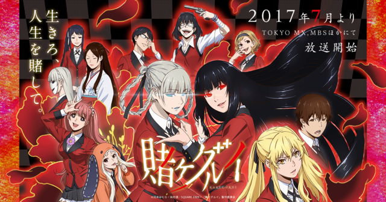
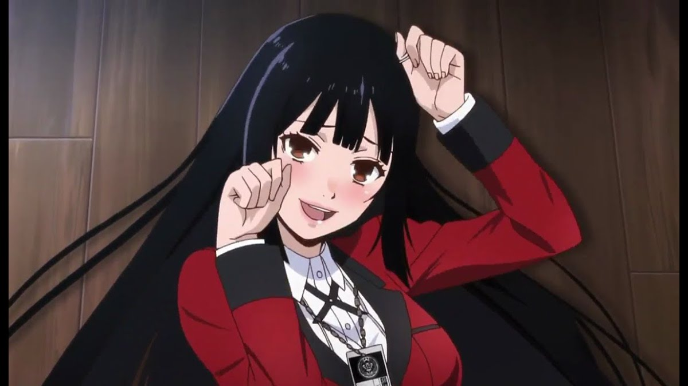
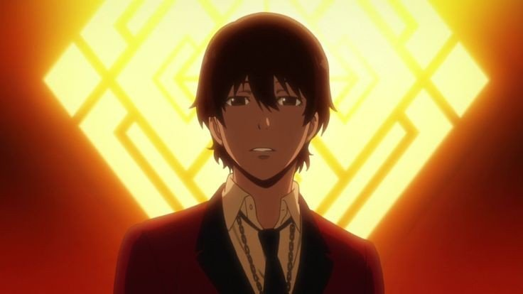
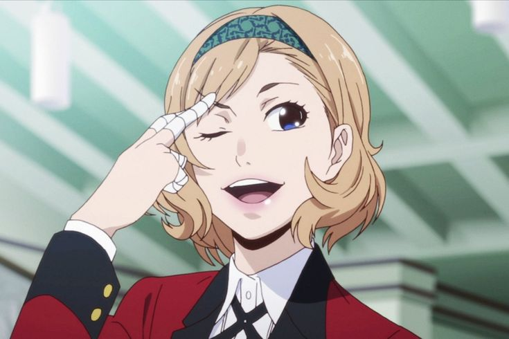
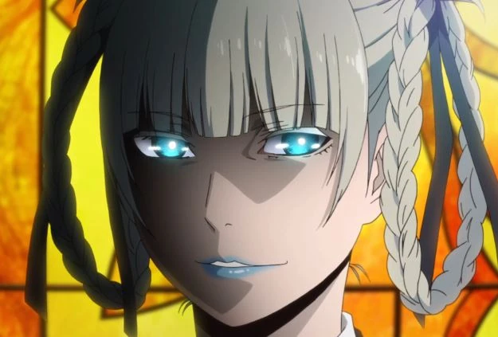

Kakegurui (賭ケグルイ?) é uma série de manga shōnen escrita por Homura Kawamoto e ilustrada por Tōru Naomura, que é publicada na revista Gangan Joker da editora Square Enix desde 2014. Uma obra derivada intitulada, Kakegurui Twin (賭ケグルイ双ツイン Kakegurui tsuin?), começou a ser publicada na Gangan Joker em 2015. Uma adaptação em anime feita pelo estúdio MAPPA foi exibida no Japão entre 1 de julho e 23 de setembro de 2017, e uma série de drama japonês foi transmitida entre 15 de janeiro e 19 de março de 2018.
Kakegurui é um mangá e anime japonês criado por Homura Kawamoto e animado pelo estúdio Mappa, a obra passa no estilo de vida escolar misturado a jogos de azar. Mesmo possuindo três protagonistas, o foco maior fica em Yumeko Jabami, que demonstrou ser especialista em apostas e, principalmente, em descobrir trapaças. O instituto possui um Conselho Estudantil muito rígido, além das regras que também são bastante rigorosas, a qual trata os apostadores ruins como a escória da instituição, mais conhecidos como ‘’bichos de estimação’’, já os melhores colegiais possuem diversos benefícios e, dependendo de suas habilidades, podem entrar no Comitê Escolar.

A história se passa na Academia Privada Hyakkaou, uma escola de elite de alta classe que abriga os filhos das pessoas mais ricas e influentes do Japão e futuros líderes e profissionais entre o corpo discente. No entanto, a hierarquia do aluno nesta escola não é determinada pelo desempenho acadêmico ou capacidade atlética, mas sim pelas apostas. Os alunos são classificados por suas contribuições monetárias enviadas ao conselho estudantil, aqueles que ganham ganham popularidade, prestígio e conexões, enquanto aqueles que perdem e se endividam e tornam-se escravos, "animais domésticos", apelidado de "Totó" ou "Gata Vira-lata" dependendo do gênero e é identificado com uma etiqueta semelhante a um colar em volta do pescoço. Os animais de estimação que não conseguirem saldar suas dívidas até a formatura recebem "Cronograma de Vida", que ditam seu futuro à medida que pagam suas dívidas com a vida.
Protagonistas
Yumeko Jabami (蛇喰 夢子 Jabami Yumeko?) Voz de: Saori Hayami (japonês); Bruna Laynes (português) Intérprete: Minami Hamabe Uma aluna novata que aparenta ser bonita à primeira vista, mas ela gosta mesmo é de correr riscos em suas apostas, logo de inicio ela consegue 3 bilhões em sua primeira aposta na escola privada Hyakkaou.
Ryōta Suzui (鈴井 涼太 Suzui Ryōta?) Voz de: Tatsuya Tokutake (japonês); Fabrício Vila Verde (português) Intérprete: Mahiro Takasugi Colega de classe de Yumeko, um bichinho de estimação "totó". Jabami o ajuda a extinguir suas dividas, a partir daí ele ficou fascinado como ela jogava.
Mary Saotome (早乙女 芽亜里 Saotome Meari?) Voz de: Minami Tanaka (japonês); Ana Elena Bittencourt (português) Intérprete: Aoi Morikawa Colega de classe de Yumeko, ela é bastante orgulhosa e inicialmente hostil, sua amizade com a Jabami surgiu através dos jogos.[4] Ela é também a protagonista do mangá spin-off Kakegurui Twin
Itsuki Sumeragi (em japonês: 月 伊 月) é uma personagem coadjuvante na maravilhosa franquia Kakegurui. Atua sendo uma estudante do primeiro ano, pertencente à classe “Flower”, e uma ex-integrante do Grêmio Estudantil na Academia Privada Hyakkaou.
Kirari Momobami é uma personagem da série de anime "Kakegurui - Compulsive Gambler". Ela é a presidente do Grêmio Estudantil da Escola Particular Hyakkao e a responsável pela sua hierarquia. Kirari é uma antagonista importante em "Kakegurui - Compulsive Gambler" e "Kakegurui Twin"
